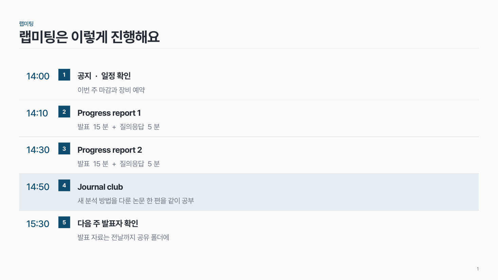
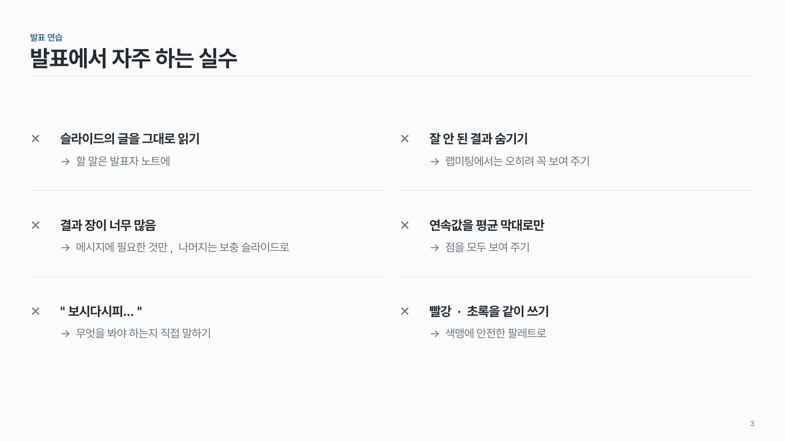
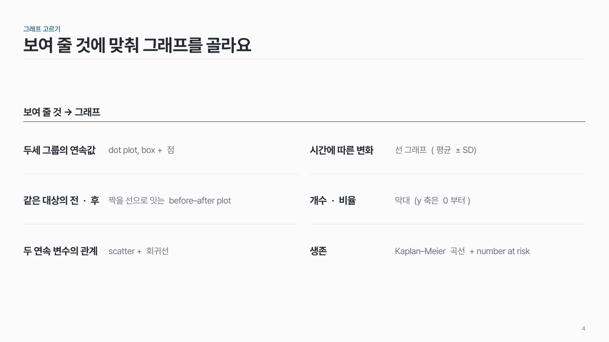
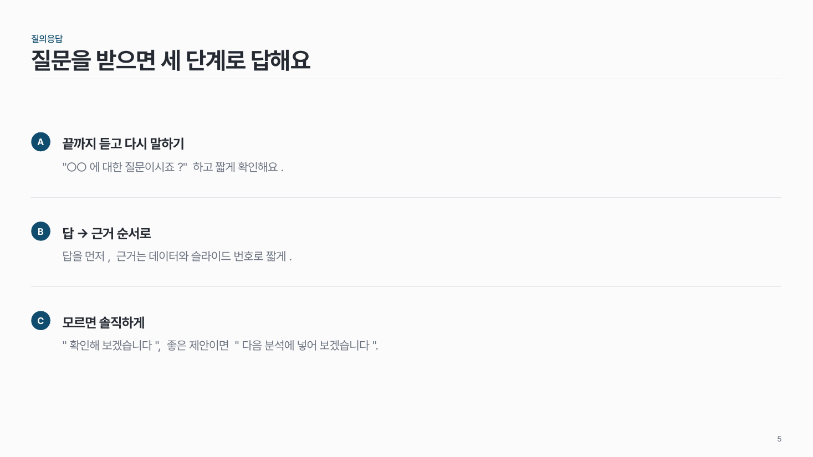
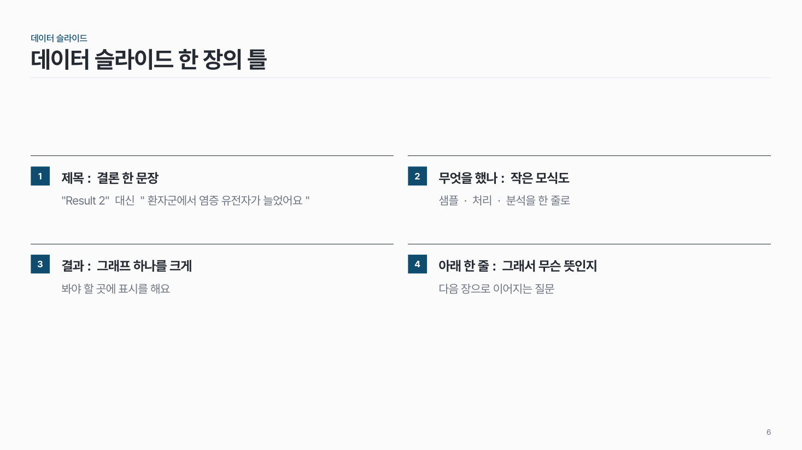
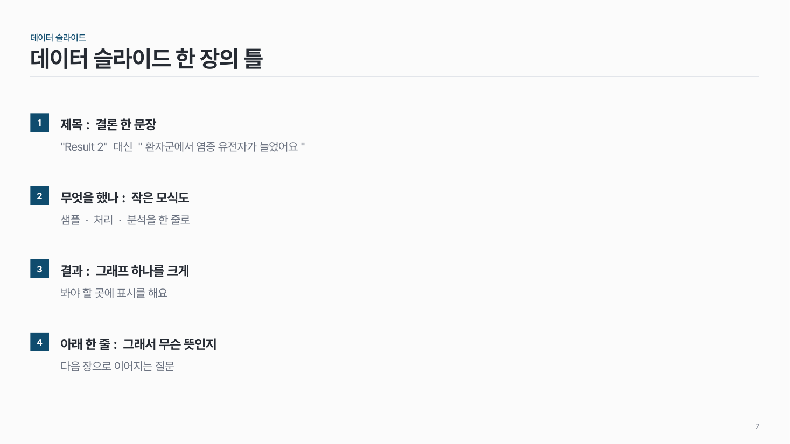
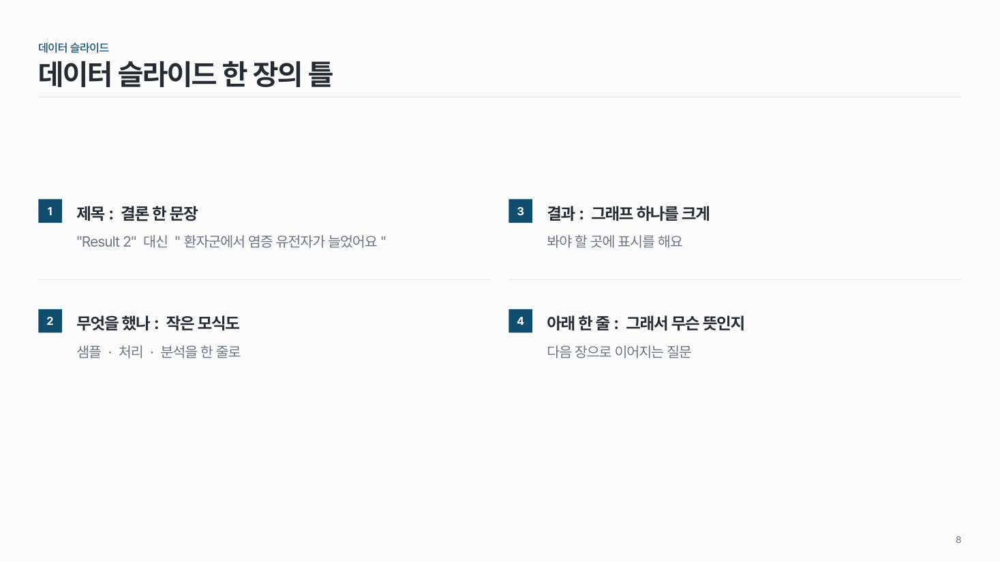
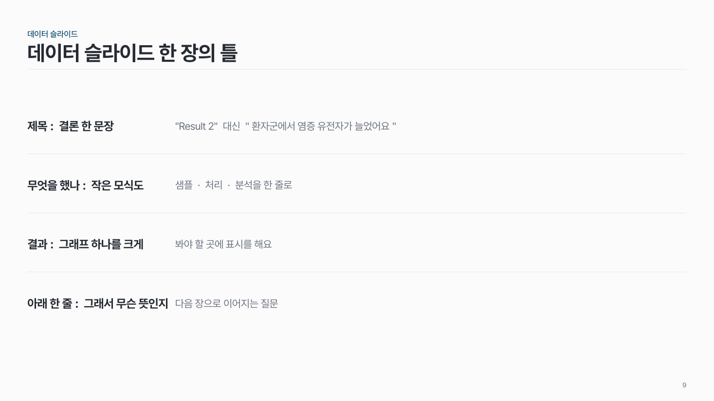
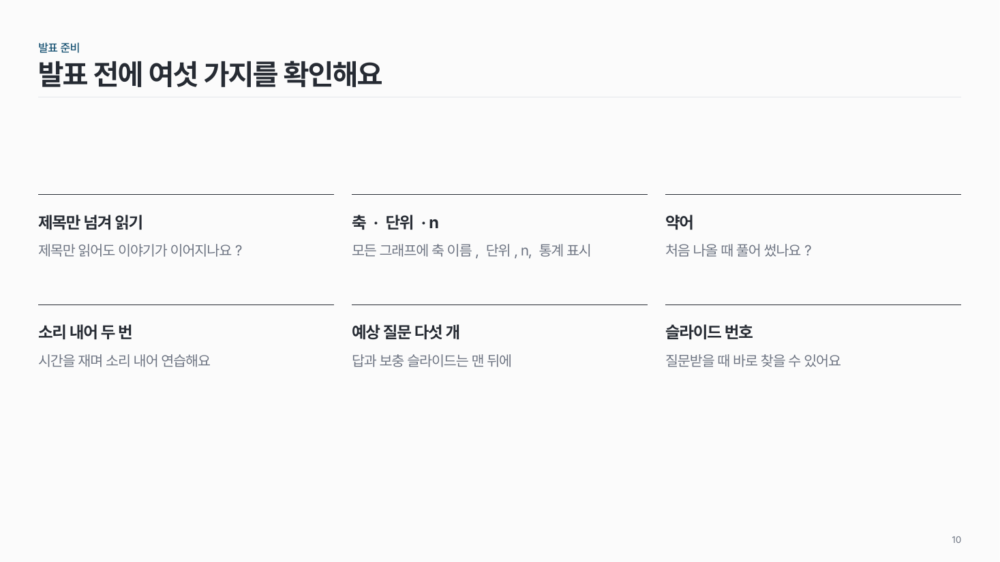

행 구분 리스트 list-01
항목을 가로선으로 줄을 나눠 쌓아요. 줄마다 번호(또는 표시) + 제목 + 설명.

이 시안
줄 나눔 · 1열 · 번호 · 앞 열(시간) · 한 줄 강조
슬라이드 제목: 랩미팅은 이렇게 진행해요
언제 쓰나
같은 모양의 항목 2–12개를 보여 줄 때요. 순서, 할 일, 체크리스트, 자주 하는 실수, 용어 설명에 두루 써요.
구성
- 줄 나눔(rows): 줄마다 아래에 가는 가로선. 열이 여럿이면 위→아래로 먼저 읽어요.
- 칸 나눔(grid): 칸마다 위에 가는 선. 왼쪽→오른쪽으로 먼저 읽어요.
- 줄 앞 표시는 번호 네모, A·B·C 원, ✕, 또는 없음.
- 설명은 제목 아래 또는 오른쪽.
- 시간·조건 같은 짧은 값은 맨 앞 열에.
지킬 것
- 항목은 2–12개, 열은 1–3개.
- 항목마다 제목 한 줄 + 설명 1–2줄.
- 강조는 한 항목만: 줄 나눔은 그 줄에 옅은 면, 칸 나눔은 위 선을 진하게.
- 표시 모양은 한 장 안에서 하나만.
하지 말 것
- 항목마다 카드 상자를 씌우지 않아요.
- 항목마다 다른 아이콘·색을 쓰지 않아요.
- 설명을 문단으로 길게 쓰지 않아요. 길면 장을 나눠요.
팁
같은 내용이라도 줄 나눔(rows)은 읽기 편하고, 칸 나눔(grid)은 한눈에 훑기 좋아요. 아래 시안 F–I는 같은 네 항목을 옵션만 바꿔 그린 거예요.
시안 비교
같은 내용을 옵션만 바꿔 그렸어요. 그림을 누르면 크게 보여요.
A줄 나눔 · 1열 · 번호 · 앞 열(시간) · 한 줄 강조
슬라이드 제목: 랩미팅은 이렇게 진행해요

B줄 나눔 · 2열 · 번호
슬라이드 제목: Progress report는 다섯 부분이에요

C줄 나눔 · 2열 · ✕ 표시
슬라이드 제목: 발표에서 자주 하는 실수

D줄 나눔 · 2열 · 표시 없음 · 설명 오른쪽 · 소제목
슬라이드 제목: 보여 줄 것에 맞춰 그래프를 골라요

E줄 나눔 · 1열 · A·B·C 원
슬라이드 제목: 질문을 받으면 세 단계로 답해요

F칸 나눔 · 2열 · 번호
슬라이드 제목: 데이터 슬라이드 한 장의 틀

G같은 내용 (F) → 줄 나눔 · 1열 · 번호
슬라이드 제목: 데이터 슬라이드 한 장의 틀

H같은 내용 (F) → 줄 나눔 · 2열 · 번호
슬라이드 제목: 데이터 슬라이드 한 장의 틀

I같은 내용 (F) → 줄 나눔 · 1열 · 표시 없음 · 설명 오른쪽
슬라이드 제목: 데이터 슬라이드 한 장의 틀

J칸 나눔 · 3열 · 표시 없음
슬라이드 제목: 발표 전에 여섯 가지를 확인해요